软连接ln
回忆
- 上次我们学习了cp命令
- cp有两个关键因素
- 源和目标都可以用绝对路径和可以用相对路径
- cp 还有一些参数
- -r 递归
- -f 强制
- -i 交互
- -l 只生成链接
- 这个链接是什么意思呢？
例子
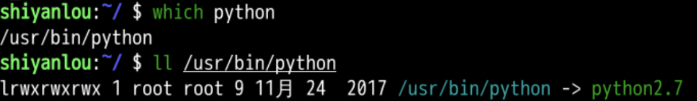
- /usr/bin/python 是一个链接
- 是一个指向/usr/bin/python2.7的链接
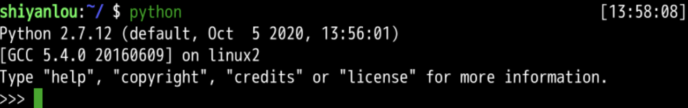
- 运行python
- 就是运行/usr/bin/python3
- 那什么是一个链接呢？
链接
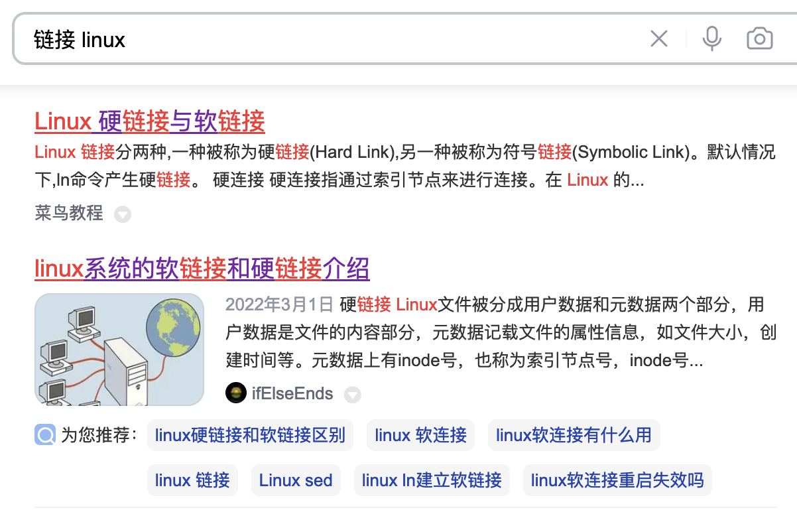
查看inode
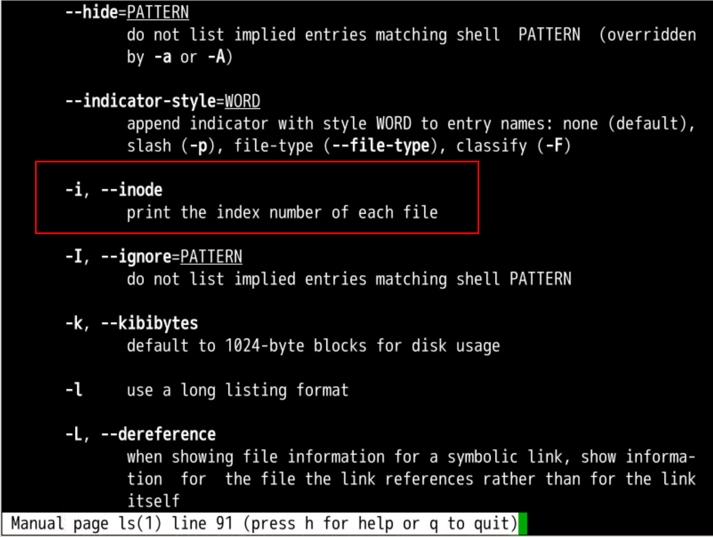
- ls -i
- 可以查询到文件的inode
- inode就是index node
- 索引节点
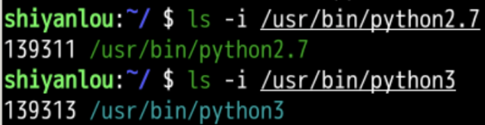
- 这两个东西的inode不同
- 我可以自己建立软硬的链接吗？
查询文档
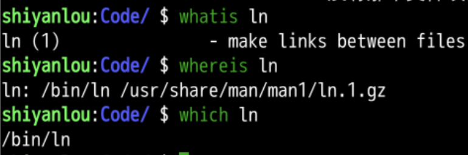
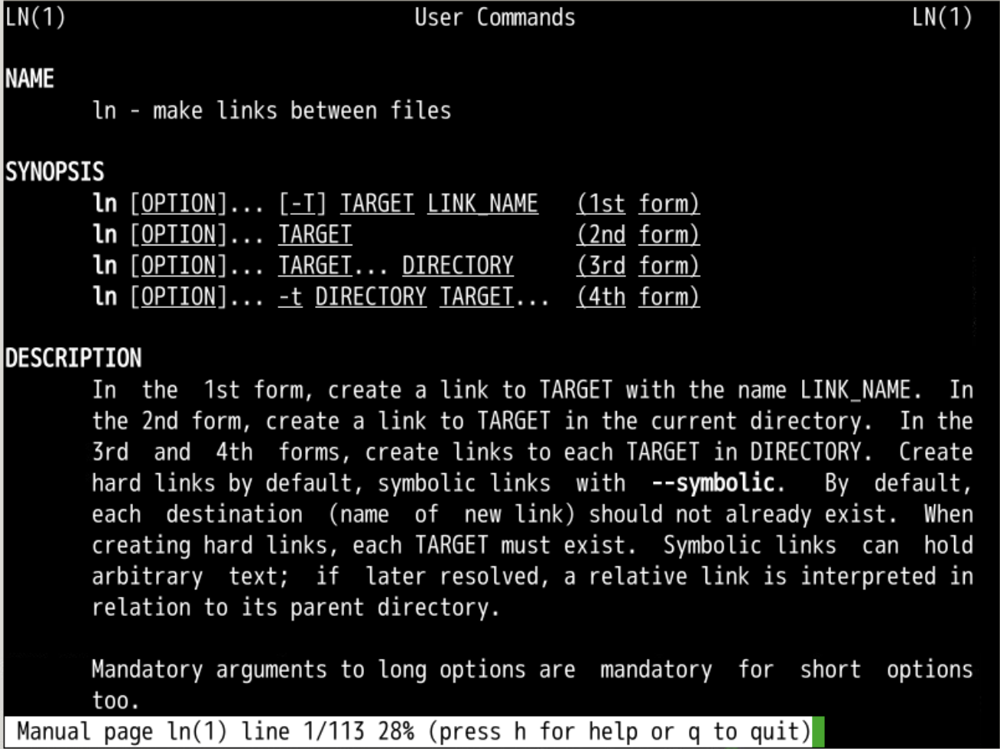
动手试试
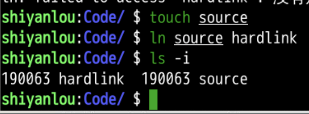
- 可以看到我们建立了一个硬链接
- 这两个文件所指向的索引节点(inode)一样
- 那么如何建立一个软链接呢
查询文档
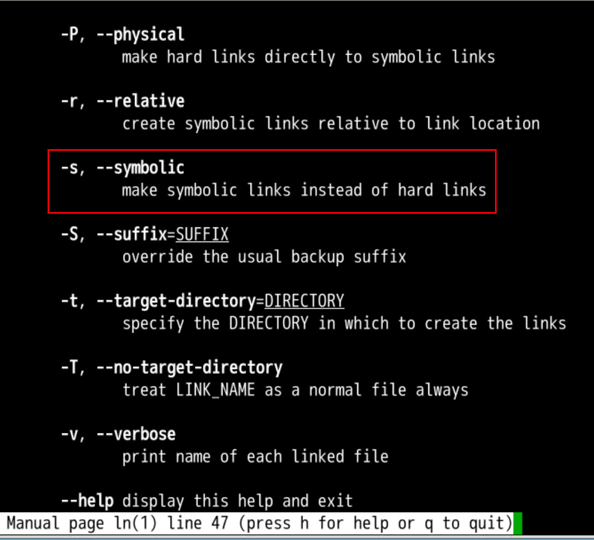
软链接
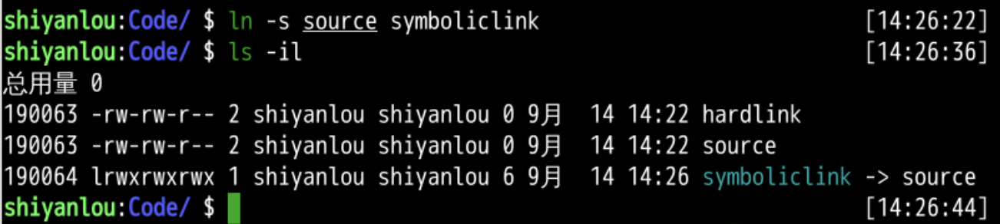
- 可以看到软链接就是箭头的那种形式
- python是python2.7的软链接
- 而且软链接使用的inode不同
- 那删除文件会如何呢？
删除链接
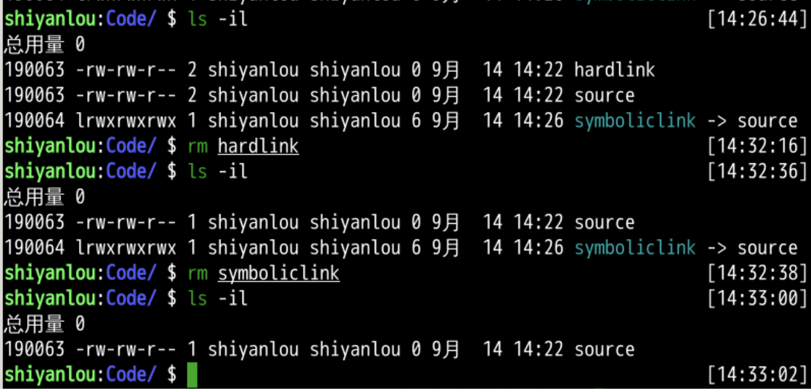
- 就像一般删除文件一样
- 没有区别
- 删除被链接文件会如何呢
删除被链接的文件
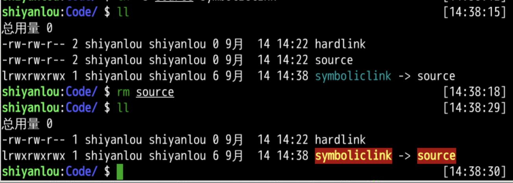
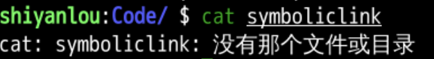
readlink
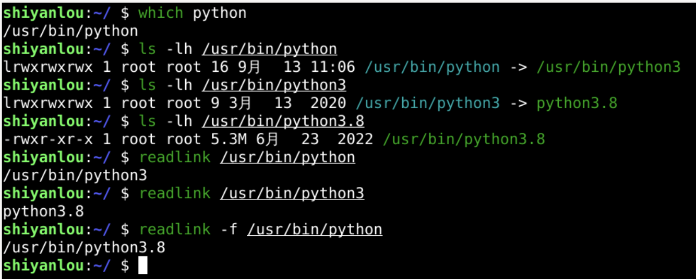
readlink 和 realpath
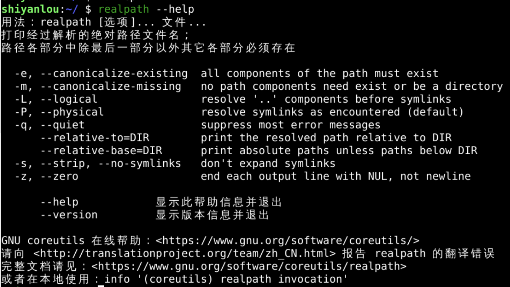
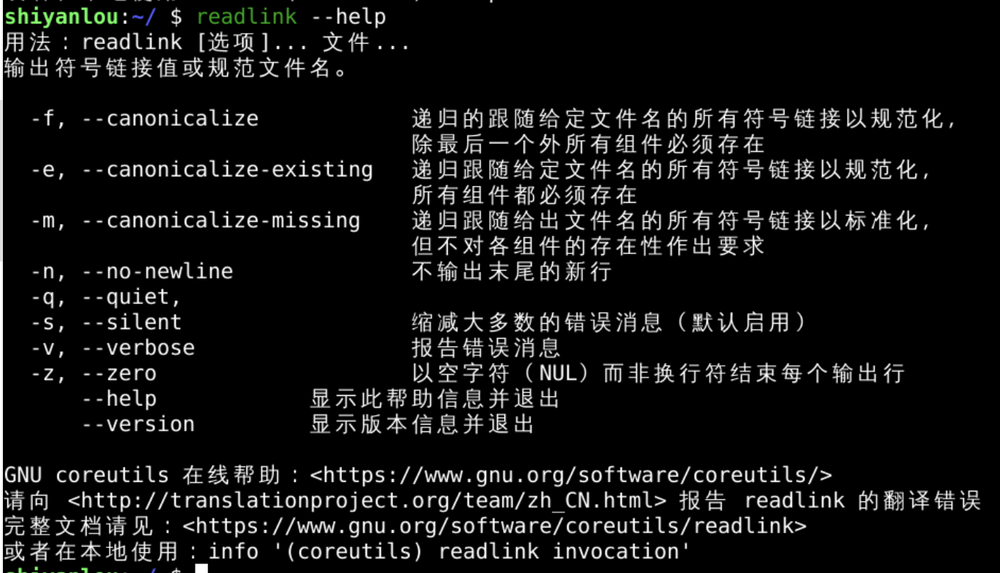
查询文档
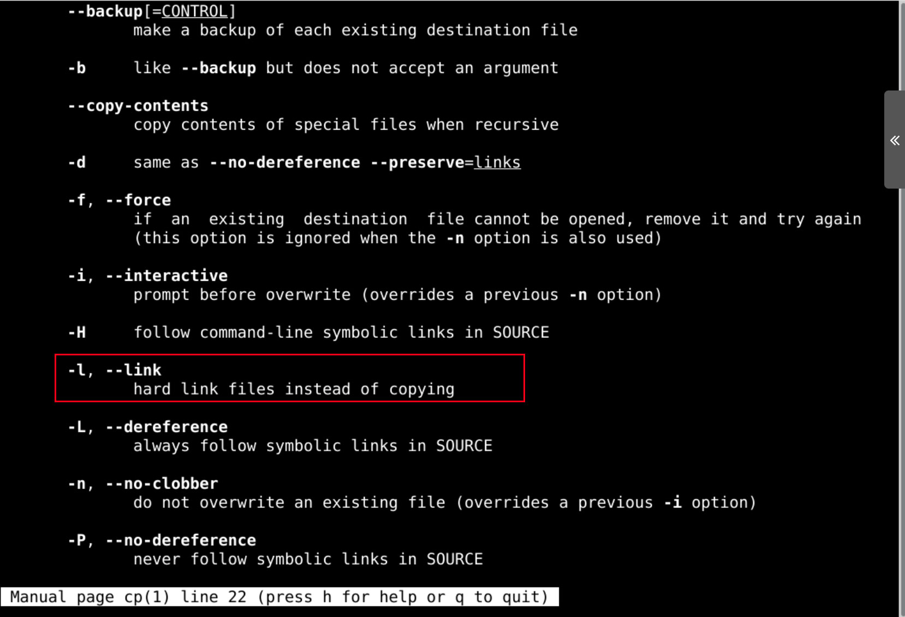
cp -l
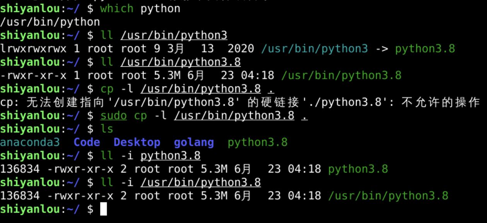
总结
- 这次我们研究了ln
- ln指的是链接(link)
- 可以建立硬链接、软链接
- 硬链接
- 直接指向原来文件所在的硬盘位置
- 指向索引节点(inode)
- 索引节点被引用数量+1
- 如果源文件被删除
- 硬链接仍然指向索引节点(inode)
- 软链接
- 指向原来的文件而不是索引节点
- 所以如果源文件被删除
- 软链接指向目标消失
- 也就失效了
- cp -l 拷贝的是一个硬链接
- 如果我只想拷贝文件中的内容
- 下次再说👋
就可以